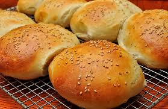
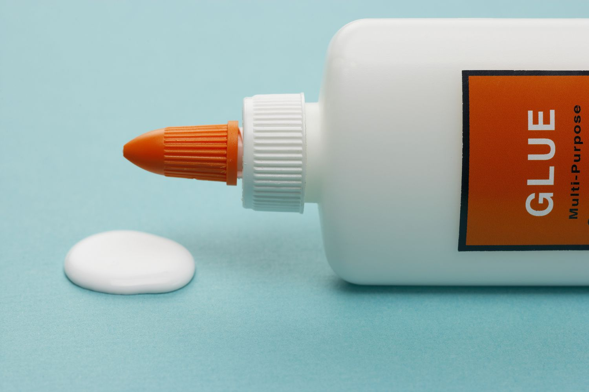

Sticky Buns Recipe


If you like sticky food that makes a complete mess, this is the perfect recipe for you!
These sticky buns will leave your fingers stuck together and your stomach yearning for more.
This recipe is even shorter than the meatballs, so for time-saving folks; this is the one!
Ingrediants:
- 3 cups of flour
- 2 tbsp of butter
- 5 tsp of salt/sugar
- 2 large eggs
- 1 gram of Elmer's glue
Cooking process:
- Combine the flour and eggs in a large bowl. Mix well.
- Sprinkle in your salt and sugar. Mix well.
- Melt butter and add to the mixture. Mix well.
- Add your gram of Elmer's glue
- Form the mixture into 3-inch balls, and bake at 425 for 20 minutes.
Back to home